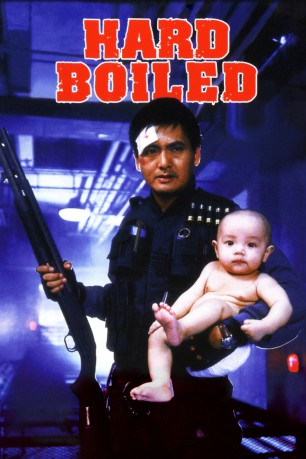
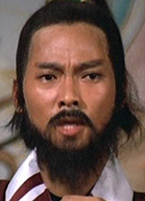

#2651 Hard Boiled
 
 IMDB-Wertung: 7.9 / 10
IMDB-Wertung: 7.9 / 10  Metascore: 0
Metascore: 0 
John Woos letzter (Action-) Streifen in Hong Kong, ehe er seine Betätigungsfeld nach Hollywood verlagerte. Der vom späteren Martial-Arts-Superstar Chow Yun Fat gespielte Polizist Yuen gerät in ein undurchsichtiges Drogen- und Waffenhandels-Komplott. Ein Kampf Gut gegen Böse beginnt.
Jahr: 1992
Dauer: 122 Minuten
FSK: 16
Land: Hong-Kong Studio: Splendid FilmTonspuren:
Untertitel:
Auflösung: 1080p (1920x1040) Größe: 7905 MB
Genre: Action, Thriller, Drama, Krimi
Regisseur:  John Woo
John Woo
Drehbuch: John Woo, Barry Wong, Gordon Chan
Soundtrack: Michael Gibbs
Darsteller:
 Yun-Fat Chow als Insp. 'Tequila' Yuen
Yun-Fat Chow als Insp. 'Tequila' Yuen Tony Chiu Wai Leung als Alan
Tony Chiu Wai Leung als Alan Anthony Chau-Sang Wong als Johnny Wong
Anthony Chau-Sang Wong als Johnny Wong Jun Kunimura als Teahouse gun-man, Guest star
Jun Kunimura als Teahouse gun-man, Guest star John Woo als Mr. Woo , uncredited
John Woo als Mr. Woo , uncredited- Teresa Mo als Teresa Chang
 Philip Chan als Supt. Pang
Philip Chan als Supt. Pang- Philip Kwok als Mad Dog
- Hoi-San Kwan als Mr. Hoi, Guest star
- Wei Tung als Foxy, Guest star
- Bowie Lam als Ah Lung
 Meng Lo als Lonny
Meng Lo als Lonny- Bobbie Au-Yeung als Lionheart
- Shui Ting Ng als Ah Chung
- Kong Lau als Hospital Director
- Wai-Sun Lam als Hitman 1
- Benny Lam als Hitman 2
- Kenny Lam als Hitman 3
- Michael Dingo als Jimmy
- Hoi-Shan Lai als Librarian
- Kin-Shing Choi als Gangster
- Kei-Yung Ho als Johnny's man
-  Chi Ming Lau als
- Bo-Chuen Ng als
- Wai Man Tam als Gangster
- Simon Broad als Insp. 'Tequila' Yuen , uncredited
- Pierre Tremblay als Johnny Wong , uncredited
Datei: X:\HD-Eastern-Modern(A-M)\Hard Boiled (1992, FSK16, 1920x1040).mkv seit 30.11.2015
Festplatte: HD Eastern+Western
 Es gibt insgesamt 104 Filme in der Gruppe 'HD-Eastern-Modern(A-M)'
Es gibt insgesamt 104 Filme in der Gruppe 'HD-Eastern-Modern(A-M)'